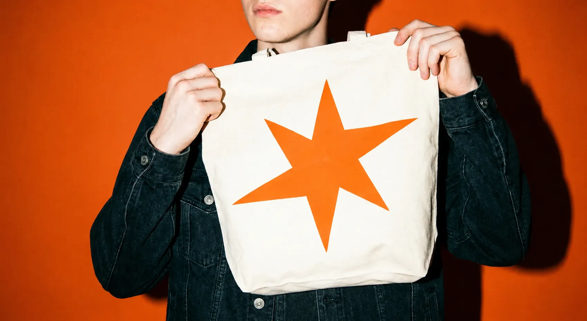
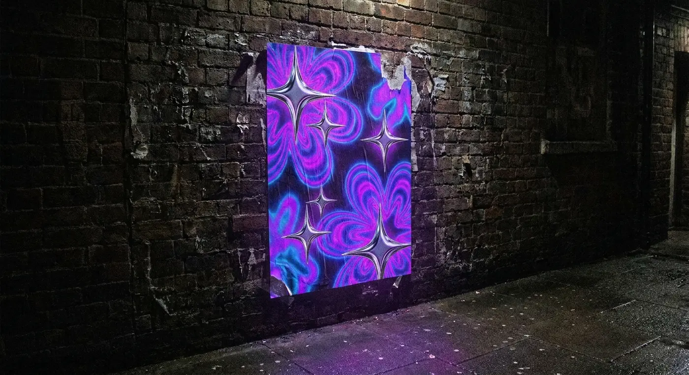
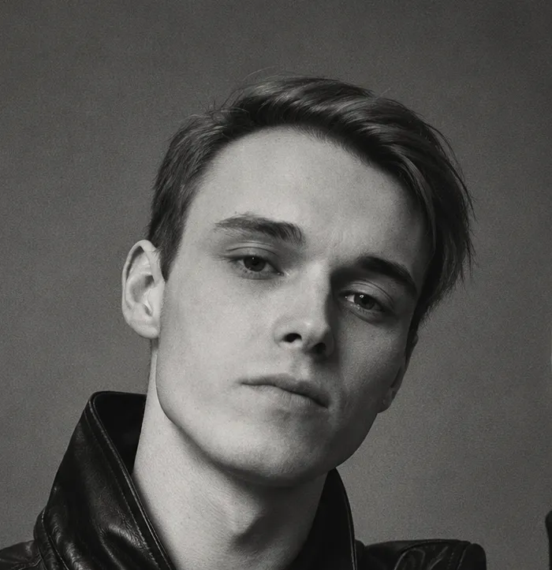

Графический дизайнер. Делаю логотипы, айдентику и визуал для соцсетей, после которых бренд узнают с первого взгляда.

в бренды, которые хочется запомнить, сохранить
и показать друзьям.Я графический дизайнер: помогаю брендам найти свой визуальный язык: создаю логотипы, айдентику и контент для соцсетей
Для каждого проекта ищу своё визуальное решение. Чтобы дизайн не просто выглядел красиво, а помогал бренду быть узнаваемым.

Обсуждаем цель проекта, сроки и требования к результату.
Фиксируем условия и стоимость в договоре. После предоплаты приступаю к работе.
Создаю дизайн по согласованной задаче и вношу правки в рамках договорённостей.
Передаю финальные материалы в согласованных форматах.